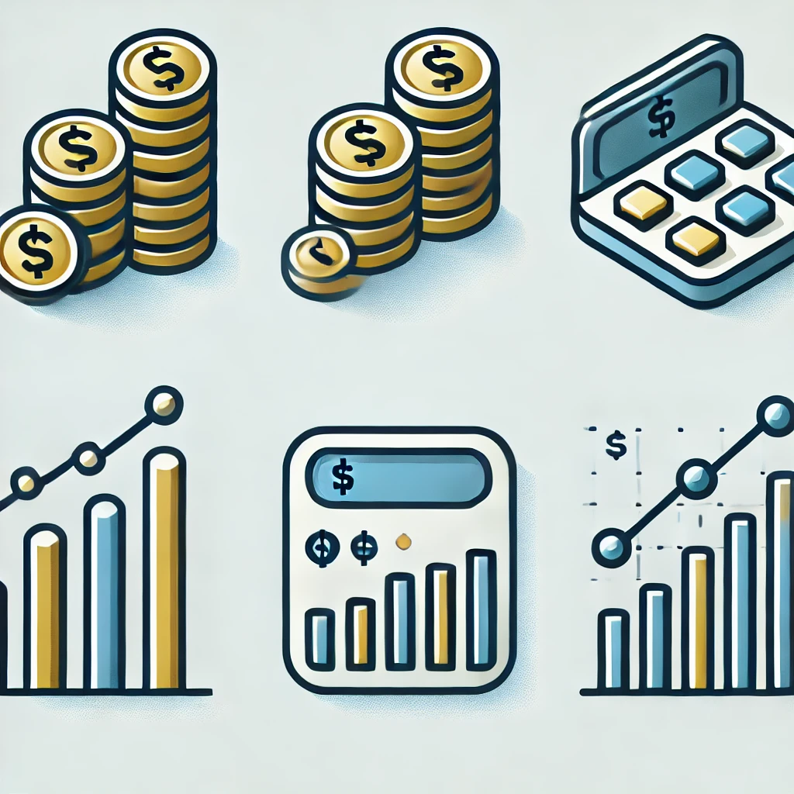
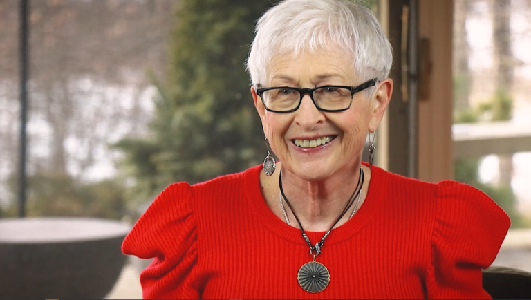

At CEW+, we navigate circumstantial barriers by providing academic, financial, and professional support to help you reach your potential. Established to support women through higher education, we empower underserved communities at U-M and beyond.
Who We Are
CEW+ empowers women+ and underserved individuals at the University of Michigan, providing resources to help them reach their academic, financial, and professional potential.
Our Services
- Career Counseling: Providing guidance on career choices, resume feedback, and job search strategies.
- Education Counseling: Assisting students with navigating academic pathways and transitioning to new opportunities.
- Emergency Funding: Offering support for unexpected financial challenges for U-M students.
Our counselors include experts like Gabriella Boufford, who specializes in trauma-informed interventions, and Bridget Gormely, who focuses on resilience-building for students.
Upcoming Events
Join us for these events:
- Financial Empowerment Series: #3 Ultimate Financial Wellness - January 28, 2025, 5:00 PM - 7:00 PM
- Midweek Mindfulness Guided Sit - Recurring virtual event every Tuesday, 12:15 PM - 12:45 PM
- The Arc of Activism: Bridging Intergenerational Legacies - February 19, 2025, 7:00 PM - 8:30 PM
Advocacy Initiatives
Financial Empowerment Initiative: Equipping participants with tools to take charge of their financial well-being.  Student caregivers: Resources for U-M students with caregiver responsibilities. Twink Frey Visiting Social Activist Program: Bringing advocates to campus for research and gender equity initiatives. 
Funding Opportunities
- Scholarships for U-M Students: Supporting childcare, living expenses, and research.
- Graduation Grant Program: Providing assistance for tuition and unexpected expenses.
- CEW+ Fellowships: Offering travel and research funding for graduate students.
Scholar Community
CEW+ connects past and current scholars to inspire action, foster growth, and make a positive impact in their communities.
Diversity, Equity, & Inclusion
Since 1964, CEW+ has worked to remove obstacles that impact women and underserved groups, bridging gaps in education and employment opportunities.
Learn more about our DEI initiatives here.